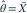

独立样本来自均值为 θ 的指数分布。以下关于样本均值的结论哪项正确？
- A它无偏但不相合
- B它只在 n=1 时是 MLE
- C它是 θ 的无偏 MLE，且达到 C-R 下界
- D它有偏且方差为 θ²
我已思考，展开答案与解析
正确答案：C
- 似然求导得

。它的方差为 ，而样本信息为
，而样本信息为  ，故有效。
，故有效。
易错提醒先明确分布参数、独立性和统计量的定义，再进行计算。
南审 813 · 2020 · 第1页 二·1；从大题提取考点并重写为单选
单选改编；题干与选项已重新编排
查看参考来源

。它的方差为，而样本信息为 ，故有效。南审 813 · 2020 · 第1页 二·1；从大题提取考点并重写为单选
单选改编；题干与选项已重新编排
查看参考来源